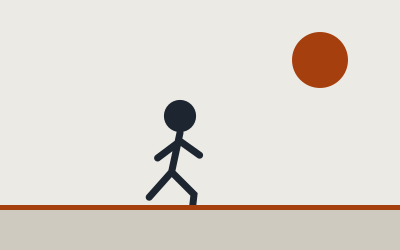
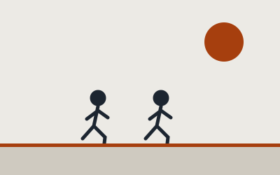
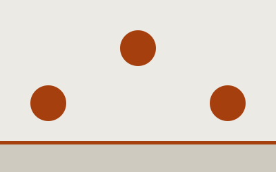
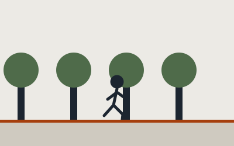
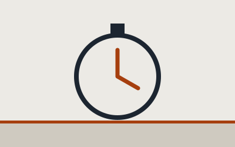
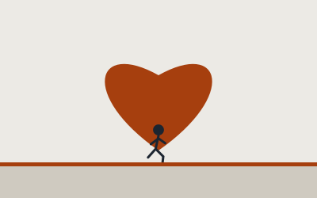
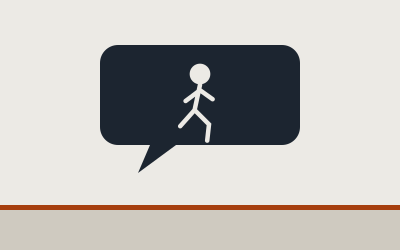

What: My Hobby
Running is how I clear my head and test my limits. I like easy runs to think, and I push myself to go a little farther and faster every week.
- You only need a good pair of shoes to start.
- It works for any fitness level, from walk-run intervals to races.
- Progress is easy to see: more distance, less time, more energy.

AI prompt: "Flat cartoon runner mid-stride on a road with a large sun, charcoal and burnt orange color palette."
Who: About Me
I am John Afunwi, a student at UNC Charlotte. I started running to manage stress and kept going because I loved how it made me feel.
- Level: [beginner / casual runner]
- Favorite distance: [e.g., 5K]
- Goal: [e.g., run a 10K or beat my best 5K time]

AI prompt: "Flat cartoon of two runners side by side under a sun, same style as the other images."
When: Best Times to Run
The best time is the one you will stick with. Cooler hours are easier on your body.
| Day | Run |
|---|---|
| Monday | Easy 2 miles |
| Wednesday | Intervals |
| Friday | Easy 2 miles |
| Sunday | Long run |

AI prompt: "Flat cartoon sun in three positions across the sky showing sunrise, noon, and sunset."
Where: Best Places
Good routes make runs more fun. Look for shade, soft surfaces, and safe paths.
- A track for measured speed work
- Greenways and trails, such as [local greenway or campus trail]
- Quiet neighborhood loops

AI prompt: "Flat cartoon runner on a path lined with green trees, same charcoal and orange style."
How: Getting Started
- Get comfortable shoes and wear breathable clothes.
- Alternate running and walking for 20 minutes.
- Add a little time each week and rest between runs.
Go slowly at first. If you can talk while you run, your pace is about right.

AI prompt: "Flat cartoon stopwatch with a charcoal ring and an orange hand on a cream background."
Why: What I Love About It
Running gives me energy, confidence, and quiet time to think. It also makes me feel proud of small goals.
- It reduces my stress.
- It builds discipline I use in school.
- It connects me with other runners.

AI prompt: "Flat cartoon orange heart with a small charcoal runner in front of it."
AI Prompts
I used AI to help with the code, text, and illustrations. Edit this list so it matches what you really used.
- "Create a single-page hobby site about running with What, Who, When, Where, How, and Why sections."
- "Show only one section at a time using the navigation links."
- Each image prompt appears in italics under its figure.

AI prompt: "Flat cartoon chat bubble with a small runner inside, charcoal and orange palette."